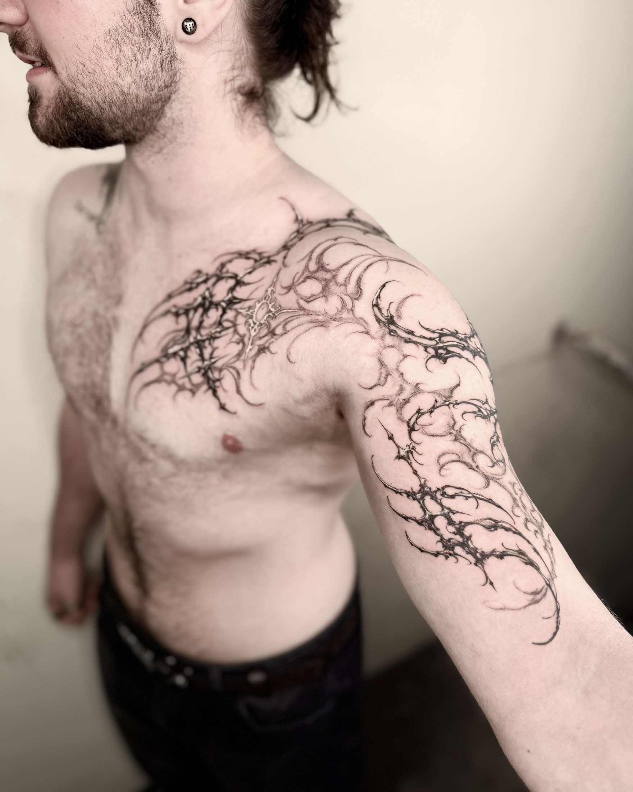

Тело задаёт линию
Плотный чёрный, тонкие линии и композиции, которые следуют анатомии. Мастер anzeigeohnegrund из студии Glocks and Flowers в Мюнстере — о работе прямо на коже, поиске своего визуального языка и свободе доверять собственным идеям.

«Точность, которая не нарушает естественного движения композиции»Работа anzeigeohnegrund
Glocks and Flowers
Ответы мастера для ТАТУ ТУТ. Перевод с английского. Тематические подзаголовки добавлены редакцией.
В этом интервью
Путь в татуировку
Не осознавая этого, я готовился к этой профессии с раннего возраста. Я начал рисовать совсем маленьким и всегда любил работать руками. Когда я открыл для себя татуировку, то понял, что в ней соединилось всё, чем я увлекался. Мне сразу стало ясно: именно вокруг этого я хочу построить свою жизнь.

Название стиля
Киберсигилизм — общее название, которым часто описывают такие формы. В моём собственном стиле соединяются элементы разных направлений, но я использую этот термин, потому что он помогает людям понять мои работы и найти для них контекст.
Контраст и глубина
Мне нравится работать с сильным контрастом и тенями: они придают формам глубину и немного реалистичности. Думаю, именно это создаёт эффект, который вы описываете.
Анатомия и движение
За эти годы я много времени посвятил изучению анатомии человека и тому, как мышечные линии проходят по телу. Мне больше всего нравится, когда рисунок в основном следует этим линиям, с несколькими намеренными отступлениями: тогда он естественно сочетается с телом в движении. Я часто работаю фрихендом, подстраивая рисунок прямо под форму мышц. Но даже когда я рисую эскиз на iPad и переношу его через трансфер, всё равно держу в голове анатомию и движение.


От блэкворка к тонкой линии
Это произошло постепенно, а не благодаря какому-то одному проекту. В моём раннем блэкворке большую роль играли плотные чёрные заливки. Со временем к этому подходу добавилась моя любовь к тонким, чистым линиям. Мне по-прежнему хочется сохранять выразительные чёрные элементы, но сочетать их с более деликатной линейной работой. На этом пути меня вдохновляли другие художники, а я продолжал развивать собственный визуальный язык.
Фрихенд и эскиз
Мне нравятся оба подхода. В больших проектах, где единая композиция проходит через несколько частей тела, я особенно люблю работать фрихендом. В будущем я хотел бы сосредоточиться прежде всего на этом процессе. Иногда сначала делаю приблизительный набросок на iPad, а потом держу его рядом как ориентир, пока рисую непосредственно на коже.
Своя студия и местная сцена
Моя студия и мастера в моей команде довольно альтернативные на фоне значительной части местной тату-сцены. Мюнстер — университетский город, где много молодых людей, но, по моему опыту, местная тату-сцена больше ориентирована на традиционные направления. Именно в этой среде я понял, что хочу создать пространство для той татуировки, которая увлекает лично меня. Вместе с командой мы исследуем более современное направление и даём место разным подходам. Мы уважаем традиционную татуировку и видим свою работу как ещё одну ветвь местной сцены.
Самые личные работы
Сложно выбрать одну работу: каждая помогала мне развивать свой стиль. Но особенно выделяются мои недавние татуировки на кистях и стопах. Мне кажется, они ближе всего к моему собственному визуальному языку, и положительная реакция людей в интернете много для меня значит.
В этих проектах я сознательно решил довериться собственным идеям и воплотить то, что прежде существовало только у меня в голове. Они соединяют влияния разных стилей, которые я полюбил за эти годы. Особенно меня привлекает многослойность: элементы как будто перекрывают друг друга, как в татуировке бластовер. Это взаимодействие воплощает многое из того, что я люблю в татуировке, и поэтому эти работы для меня особенно личные.

Тёмная эстетика и изящество
Меня всегда привлекала тёмная эстетика — в моде, иллюстрации и татуировке. Сильный контраст играет в ней большую роль, но больше всего мне интересно соединять эту мрачность с чем-то тонким и элегантным. Именно это меня и притягивает: смелые, острые формы рядом со сложным орнаментом. Между ними есть напряжение, почти как равновесие добра и зла, которое проходит через многие мои работы.
Технические сложности
Самая большая техническая сложность — сохранить тонкие детали чистыми и при этом добиться, чтобы татуировка хорошо читалась на расстоянии. Вблизи мне хочется, чтобы люди находили небольшие детали, а издалека работа должна по-прежнему собираться в сильную цельную форму, которая следует телу.
При работе с трансфером одна из практических задач — сохранять видимость этих мелких деталей по ходу сеанса. Обычно я сначала делаю тонкие элементы, пока трансфер не побледнел или не стёрся, а затем перехожу к более массивным участкам. Я также оставляю возможность что-то скорректировать или развить непосредственно на коже. Для меня это точность, которая не нарушает естественного движения композиции.


ИИ и авторский язык
ИИ меня не особенно тревожит. Для меня самая значимая часть создания искусства рождается из человеческого воображения и личного опыта. Я вижу, что ИИ может быть полезен как практический инструмент, особенно в задачах, где меньше творческой вовлечённости, и я к этому открыт.
Но я не хотел бы полагаться на него при выборе своего художественного направления. Эти системы учатся на существующих работах, и меня беспокоит, что чрезмерная опора на них может приблизить меня к чужому визуальному языку вместо того, чтобы помочь развивать собственный. Я хочу, чтобы идеи моих татуировок исходили от меня и привносили что-то личное.
Совет о поиске своего стиля
Начните с того, чтобы заглянуть внутрь себя. Обратите внимание на то, что вас привлекает: не только в искусстве, но и в людях, переживаниях и во всём, с чем вы чувствовали связь на протяжении жизни. Спросите себя, что эти влияния для вас значат и что они говорят о вас самих.
Каждый откуда-то черпает вдохновение. Собственный визуальный язык появляется, когда вы пропускаете эти влияния через свою личность, а не просто воспроизводите их. Соединяйте их, экспериментируйте и позволяйте своему взгляду определять результат. Думаю, так и возникает что-то личное: способ видеть и выражать вещи, к которому могли прийти только вы.
Слова, которые использует мастер
Фрихенд — рисунок непосредственно на коже. Трансфер — перенесённый на кожу контур эскиза. Сравнение с бластовером в рассказе о многослойности не означает, что показанные работы перекрывают старые татуировки.